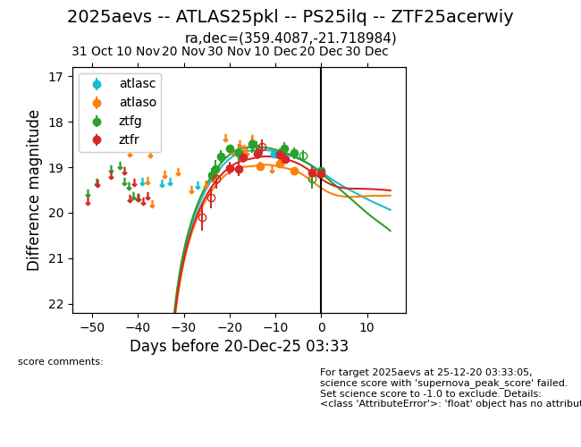
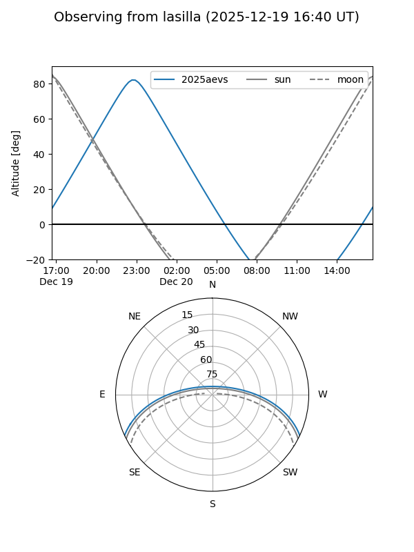
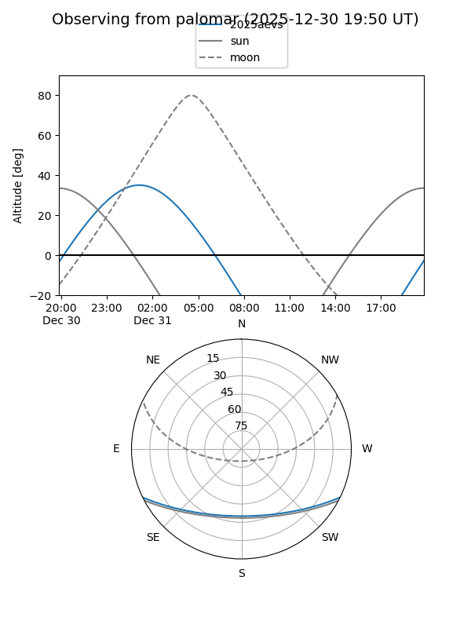
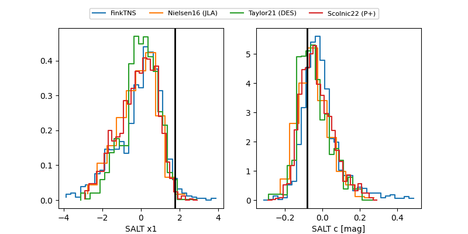

2025aevs
Target 2025aevs at 2025-12-21 02:32
Aliases and brokers:
FINK: fink-portal.org/ZTF25acerwiy
Lasair: lasair-ztf.lsst.ac.uk/objects/ZTF25acerwiy
ALeRCE: alerce.online/object/ZTF25acerwiy
TNS: wis-tns.org/object/2025aevs
YSE: ziggy.ucolick.org/yse/transient_detail/2025aevs
alt names
ZTF25acerwiy (ztf,fink_ztf)
2025aevs (tns,yse)
PS25ilq (panstarrs)
ATLAS25pkl (atlas)
Coordinates:
equatorial (ra, dec) = 359.4087,-21.71898
equatorial (HMS+DMS) = 23:57:38.10,-21:43:08.34
galactic (l, b) = (53.8621,-76.62270)
Flags:
Photometry:
last atlasc=18.71, atlaso=19.08, ztfg=19.27, ztfr=19.14
1 atlasc, 3 atlaso, 10 ztfg, 8 ztfr detections
Lightcurve

Visibility


Additional plots
